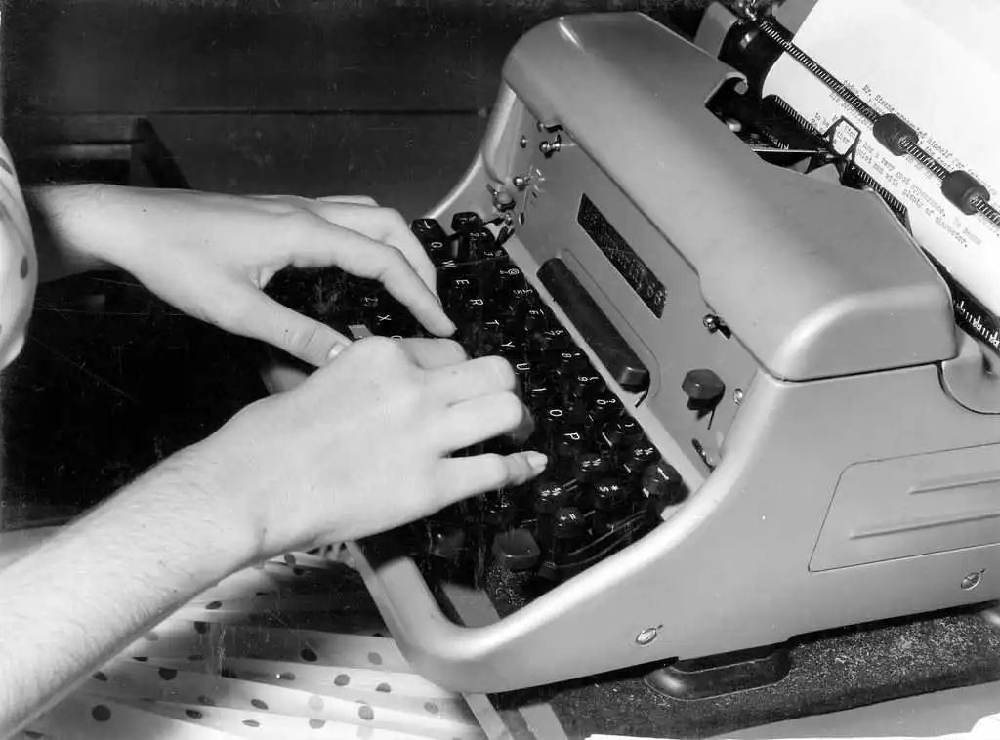
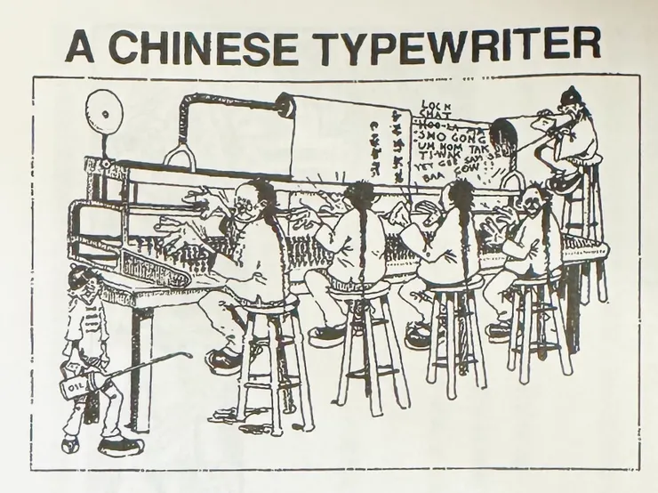
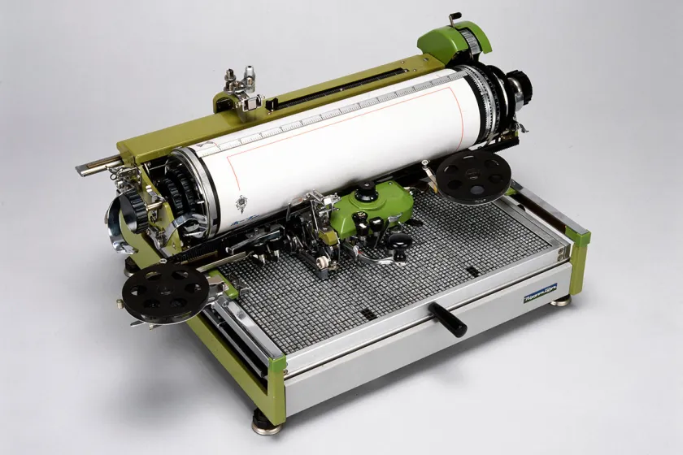
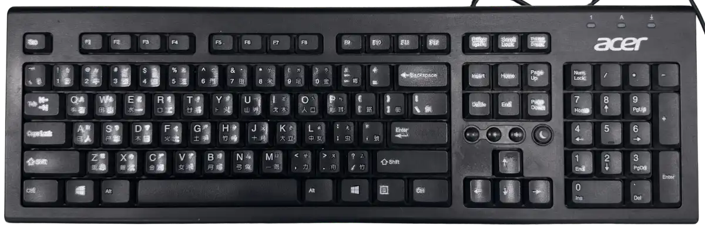
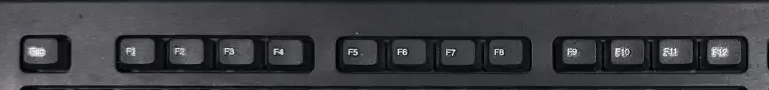
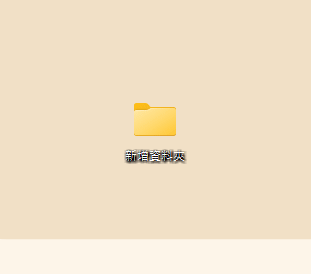
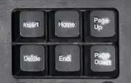
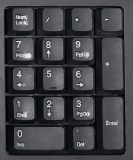
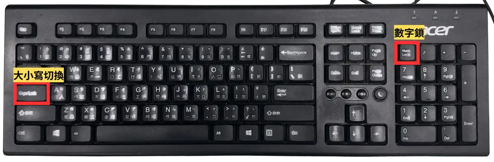

1這個鍵盤是怎麼來的
先猜一題。答錯完全沒關係 —— 這題本來就很難猜。
一百年前，如果要把一封中文的信「打」出來，你猜他們用什麼？
提示：那時候還沒有電腦。
英文的打字機，26 個鍵就夠了

英文的每一個字都是 26 個字母拼出來的，所以鍵盤上有這 26 個字母就夠了。 但中文不一樣 —— 中文有好幾萬個字，每一個字長得都不一樣， 沒辦法用 26 個東西拼出來。
那中文的打字機長什麼樣子？外國人是這樣想的

看看這張漫畫在畫什麼：一台超級巨大的機器， 五、六個人並排坐著一起打，右邊還有一個人要爬梯子才搆得到上面的字， 左下角甚至有人拿著油壺在幫機器加機油。
他們的想法很直接：「中文有幾萬個字，那打字機上就要有幾萬個鍵啊！」 幾萬個鍵當然會變成一台房子那麼大的怪物。
這張漫畫畫錯了。你覺得真正的中文打字機，最可能是什麼樣子？
想想看：如果「幾萬個鍵」這條路走不通，還能怎麼辦？
其實它長這樣

是不是跟漫畫差很多？它只有一張桌子那麼大，一個人就能操作。
而且最特別的是 —— 它一個鍵都沒有。 中間那一大盤是兩千多個鉛字，打字員要移動上面那支手臂， 在盤子裡找到要的那個字，夾起來打上去，再去找下一個字。
所以它不是「按」出來的，是「找」出來的。 打字員要記住每個字放在盤子的哪個位置， 光是把字找熟就要練很久很久。
從這個大鐵盤，到你眼前這個鍵盤，中間隔了一百年。發生了這些事：
-
一百年前
用找的，不是用按的
就是上面那台。「打字員」在那個年代是一種要專門去學的職業，因為光是記住每個字放在盤子的哪個位置，就要練很久。
-
1947 年
林語堂的「明快打字機」
他花了很多年、也花光了積蓄，做出一台按三個鍵就能打出一個中文字的機器。可惜造價太貴，最後沒能量產。
-
1976 年
朱邦復的倉頡輸入法
電腦出現了，他想到一個新辦法：中文字雖然有幾萬個，但都是由日、月、金、木、水、火、土這些小零件組成的。把零件放進 26 個英文鍵，就能拼出所有的字。
-
後來
注音輸入法
又有人想：台灣的小朋友一年級就學過注音了，那何不把 ㄅㄆㄇㄈ 直接放到鍵盤上？這就是你現在用的那一種。
-
所以呢
他們一百年來都在解同一題
幾萬個中文字，怎麼用這麼少的鍵打出來？
你手上這個鍵盤，就是一百年討論出來的結果 —— 它上面每一顆鍵都有原因，沒有一顆是隨便放的。今天先把它整個走一遍。
2鍵盤分成五區
鍵盤看起來鍵很多，其實只要看懂五塊就夠了。 下面這個是會動的鍵盤 —— 點一下按鈕，那一區就會亮起來。

- 用手指指出打字區（中間最大的那一塊）
- 指出功能鍵（最上面一整排 F1 到 F12）
- 指出編輯鍵區（方向鍵，還有它上面那 6 顆）
- 指出數字鍵盤（最右邊那一塊）
- 找到三顆燈（在右上角，現在有幾顆是亮的？）
3第一區 · 打字區
這是你最熟的一區，中間最大的那一塊。字母、數字、注音符號都在這裡。
打字區的功能鍵
除了會打出字的那些鍵，這一區還有六顆特別的。 它們天天被按，但很多人不知道它們其實不只一個功能：
空白鍵
最長的那一顆，用來空一格。
打中文時它還是「一聲」，也是「選字」—— 是注音輸入法最常按的一顆。那是下一課的重點。
Enter ⏎
①換到下一行。
②送出——在搜尋框、聊天室、要填的表格裡按下去， 就把東西送出去了。所以還沒寫完的時候不要亂按。
③打中文時是「就用這個字」。
⌫ Backspace
在這一區的右上角，是最大的一顆。
刪掉游標左邊的字。
但它不是唯一的刪除鍵 —— 第三區還有一顆，方向剛好相反。
Tab ⇥
一次跳好幾格空白，用來把字排整齊。
比連按好幾次空白鍵整齊，因為每次跳的距離都一樣。
⇧ Shift
①打出鍵上面那個符號（按住 Shift 再按 1 就是 !）。
②打英文時按住它會出現大寫。
③切換中文／英文——按一下就換一種， 這也是你「突然打不出注音」最常見的原因。
左右各有一顆，用哪一顆都可以。
Ctrl 和 Alt
在這一區的最下面一排，左右各一組。
它們自己按不會有反應，一定要配別的鍵一起按， 例如「Ctrl 加 C」。
那些組合可以少動很多次滑鼠 —— 這個系列第 3 課整節都在玩。 今天先知道它們在哪裡就好。
⚠️ 兩件很容易搞錯的事
- 組合鍵要「按住」：按住 Shift 不要放 → 再按另一顆 → 兩顆一起放開。先按一下 Shift 就放開，再按另一顆，是沒有用的。 Ctrl 和 Alt 也一樣。
- Shift 按一下（不配別的鍵）會換輸入法： 本來在打注音，突然變成打英文，多半就是不小心按到它。 再按一下就換回來。
換你試試看：把這些符號打出來
下面每一格都要你真的打一次。前兩個是要按 Shift 的符號， 後兩個是中文的標點——你要先在中文輸入法下才打得出來。
在右邊的白框裡，打出左邊那個符號。 打對了會出現 ✓，並告訴你答案是哪幾顆鍵。
為什麼逗號和句號不用按 Shift？點我看答案
因為每一顆鍵最多可以印兩個東西： 下面那個直接按就有，上面那個要配 Shift。
逗號和句號本來就印在下面，所以直接按就打得出來。 驚嘆號和問號印在上面，才需要 Shift。
所以看鍵盤就知道要不要按 Shift —— 不用背。
中文的「，。」和英文的「, .」不是同一個東西點我看答案
同一顆鍵，在中文輸入法下打出來的是 ， 和 。； 在英文輸入法下打出來的是 , 和 .。
仔細看：中文的逗號比較胖、靠在格子的左下角； 中文的句號是一個小圈圈，英文的是一個小點。
寫中文作文的時候要用中文的標點， 不然一整篇看起來會怪怪的、擠在一起。
⚠️ 打不出來？先看是哪一種情況
- 打出 ㄅㄆㄇ 而不是符號 —— 那是注音組字中， 打完按一下空白鍵或 Enter 就會變成符號。
- 中文標點那兩格一直是 ✗ —— 你現在是英文輸入法。 按一下 Shift 切換成中文，再打一次。
- 驚嘆號和問號這兩格中文英文都算對， 因為它們是在練 Shift，不是在練標點。
小華想打出一個問號「？」，可是他一直按那顆鍵，打出來的都是 /。為什麼？
看一下鍵盤上那顆鍵，上面印了幾個東西？
4第二區 · 功能鍵 F1～F12
最上面那一整排 F1 到 F12，很多人一輩子沒按過。 它們不是裝飾，只是平常用不到。

先在自己的鍵盤上找到它們，然後挑三顆真的好用的來試：

還有兩顆，先講清楚免得你嚇到
⚠️ 按到這兩顆不要緊張
- F1 跳出一個說明視窗 —— 那是「求救」的意思，電腦以為你需要幫忙。把視窗關掉就好，什麼都沒壞。
- F12 跳出一堆看不懂的英文和程式碼 —— 那是給工程師看的工具，再按一次 F12 就關掉了。你沒有把電腦弄壞。
5第三區 · 編輯鍵區
方向鍵，還有它上面那 6 顆。老實說，這 6 顆現在很少用到 —— 但其中兩顆很值得學，因為它們管的是「打錯了怎麼改」。

最該學的一對：往左刪，還是往右刪
大部分人只會用 Backspace。其實刪字有兩顆鍵，方向剛好相反：
⌫ Backspace
在打字區右上角，刪掉游標左邊的字。
你本來就在用的那一顆。
Delete（Del）
在這一區，刪掉游標右邊的字，而且游標不會移動。
另外 Home／End 可以一下子跳到行首、行尾。 其餘三顆（Page Up／Page Down／Insert）知道就好。
自己玩玩看就懂了
下面這一行字是可以動的。那根會閃的橘色直線就是游標 —— 它站在哪裡，刪掉的就是它旁邊的字。每一顆都按按看，看看各發生什麼事。
游標停在「小貓｜在公園裡跑步」這個位置，現在要刪掉「貓」這個字。
看清楚游標在哪裡，「貓」在游標的哪一邊？
⚠️ 字被吃掉了？是 Insert 被按到了
- 症狀：打一個新的字，後面原本的字就少一個，好像被新的字吃掉。
- 原因：你不小心按到 Insert。它會把打字從「擠進去」變成「蓋掉」， 而且螢幕上完全沒有提示 —— 這就是它最討厭的地方。
- 解法：再按一次 Insert 就恢復正常了。
- 上面的實驗可以親手試一次：先按「Insert」，再按「打一個字」，看看會發生什麼事。
6第四區 · 數字鍵盤
最右邊那一塊，全部都是數字。打字區上面明明就有一排數字了，為什麼還要這一區？
因為要打一長串數字的時候，這裡快很多。 上面那排數字是橫的一長條，手指要跑來跑去；這一區是集中的一小塊， 一隻手不用移動就能全部按到 —— 算錢、輸入座號、打電話號碼的時候差別很明顯。
先看仔細一點

發現了嗎？這些鍵上面不只印了數字點我對答案
每一顆都印了兩個名字：
7 上面還有 Home、 8 有一個 ↑、 9 有 PgUp、 1 有 End、 2 有 ↓、 3 有 PgDn、 0 有 Ins、 . 有 Del。
咦 —— 這些名字你剛剛在第三區才看過！ Home、End、PgUp、PgDn、Insert、Delete，全部都是編輯鍵區那六顆的名字。
所以這一區的鍵有兩種身分：有時候是數字，有時候是那些編輯鍵。 那⋯⋯是誰決定它現在要當哪一個？
阿豪說：「我的鍵盤壞了，右邊那區的數字突然都打不出來，按 7 反而讓游標跳到句子最前面。」
「跳到句子最前面」—— 這個動作你剛剛在第三區看過，是哪一顆鍵做的？
7第五區 · 右上角那三顆燈
鍵盤的右上角有三顆小燈。大部分人從來沒注意過它們， 但是本節課開頭那三個「怪事」，答案全部都在這裡。

先抬頭看一下你的鍵盤右上角，現在有幾顆燈是亮的？ （燈很小，照片看不太出來，直接看真的那一台最準。）
實驗一：把數字弄壞，再修好
下面是數字鍵盤那一區的模擬。先看右上角的燈， 然後點一下 NumLk 那顆鍵把燈關掉，再去按那些數字鍵 —— 看看會發生什麼事。
那⋯⋯為什麼要設計成這樣？直接一直能打數字不好嗎？點我看答案
因為很久以前的鍵盤沒有方向鍵。
那時候鍵盤比較小，做不下那麼多鍵，所以設計的人想了一個辦法： 讓右邊這一區一鍵兩用 —— 平常打數字，需要移動游標的時候就切換過去。
後來鍵盤變大了，方向鍵也做出來了，可是這個設計就一直留著沒有拿掉。 於是今天的你，還是會遇到「數字突然打不出來」這件事。
實驗二：英文為什麼會突然變大寫
第二顆燈叫 Caps Lock（大寫鎖定）， 它在打字區左邊、Shift 的正上方（就是上面照片裡標「大小寫切換」的那一顆）。 一樣自己試一次：
換你試試看：打出六個大寫字母
現在換真的鍵盤了。在下面的框裡打出左邊那個大寫字母 —— 六個合起來是一個你很熟的字。
有兩種方法都可以：把 Caps Lock 打開， 或是按住 Shift 再按字母。兩種都試試看，比較一下差別。
Caps Lock 和 Shift 都能打大寫，那差在哪？點我看答案
Caps Lock 是「鎖住」 —— 按一次就一直是大寫，直到你再按一次關掉。 要打一整串大寫時用它。
Shift 是「按著才有」 —— 放開就變回小寫。 只要一兩個大寫字母時用它比較快（例如人名的第一個字母）。
還有一個差別很重要：Caps Lock 只管英文字母，對符號完全沒有用。 你回到第一區試試看 —— 把 Caps Lock 打開，還是打不出驚嘆號， 符號只認 Shift。
第三顆燈呢？
第三顆叫 Scroll Lock。老實說 —— 它現在幾乎沒有用了。
以前的電腦需要它，可是現在幾乎沒有任何軟體會理它。按下去、燈亮了， 然後什麼事都不會發生。
那為什麼還留著？因為鍵盤一直照著以前的樣子做下去， 沒有人把它拿掉。這種「留著只是因為以前需要」的東西， 在電腦裡到處都是 —— 你以後還會遇到很多。
⚠️ 這一課最該記住的三句話
- 右邊數字打不出來 → 看 Num Lock 的燈，按一下把它點亮。
- 英文全部變大寫 → 看 Caps Lock 的燈，按一下把它關掉。
- 打字會吃掉後面的字 → 按一下 Insert。
- 這三件事都不是電腦壞掉，都是某一顆鍵被按到了。以後同學問你，你就會修了。
8考考你
三題都是真的會發生的狀況。想清楚再選。
小美打字打到一半，發現每打一個新的字，後面就少一個字。她該按哪一顆？
游標停在「今天｜天氣很好」，要把後面那個多打的「天」刪掉，又不想移動游標。按哪一顆？
同學跑來說：「我的鍵盤是不是壞了？打英文全部都變大寫，可是數字打得出來、中文也打得出來。」
先想：如果鍵盤真的壞了，會只有「英文變大寫」這一個症狀嗎？
9自由玩一玩
打開記事本，下面每一格都可以真的試一次。挑你有興趣的做，試過就打勾。
★做完了？來挑戰
挑戰一
在記事本打一句話，然後完全不用滑鼠、也不用 Backspace， 把句子中間的某一個字刪掉。
卡住了？看提示先自己想 3 分鐘
拆成兩件事：先想辦法走到那個字旁邊，再想辦法刪掉它。
走過去要用哪一區的鍵？不能用 Backspace 的話，往右刪要用哪一顆？
看挑戰一的參考做法真的想不出來再點
1. 按 Home 跳到最前面（或用方向鍵移動）
2. 按右方向鍵，把游標移到要刪的那個字前面
3. 按 Delete，往右刪掉它
做法不只一種，你用別的方式做到也算對。
挑戰二（比較難）
故意把「字被吃掉」這個問題製造出來，然後自己修好。 修好之後，去教旁邊的同學怎麼修。
卡住了？看提示回想第三區那個陷阱
有一顆鍵按下去畫面上什麼都不會變，但是接下來打字就會開始吃掉後面的字。
它在編輯鍵區的左上角。而且修好的方法，跟弄壞的方法是同一個動作。
→下一課要做什麼
今天你把整個鍵盤走了一遍，知道每一區在做什麼了。 但是有一件事一直還沒講：中文字到底怎麼打出來？
鍵盤上明明只有英文字母，注音符號藏在哪裡？37 個注音符號， 難道要一個一個背它們在哪一顆鍵上嗎？
下一課會告訴你一個祕密 —— 注音在鍵盤上的排法是有規律的， 知道那個規律之後，你不用背 37 個位置，只要記住一件事就夠了。